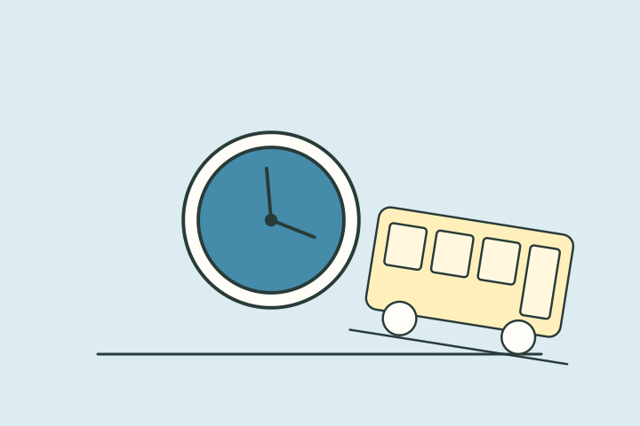

나의 결과는?
안정 역장형
관계의 흐름을 편안하고 오래가게 정리하는 타입이런 타입이에요
당신은 연애에서도 순간의 감정보다 꾸준히 쌓이는 안정감을 중요하게 생각합니다. 상대의 생활 리듬을 존중하고, 무리 없는 동선을 설계하는 데 강점이 있습니다.
편안함과 신뢰를 주는 사람으로 기억되기 쉽고 오래 갈 수 있는 기반을 잘 만듭니다.
다만 너무 차분하게만 보이지 않도록, 가끔은 감정을 먼저 표현해주는 것이 큰 힘이 됩니다.
이런 순간, 나답죠
만남이 끝나면 잘 들어갔는지 확인하고 다음에 볼 날짜를 천천히 잡아요. 특별한 이벤트보다 약속한 시간에 나타나는 일이 더 자연스러워요.
- 신뢰를 천천히 단단하게 쌓는 편
- 갈등 상황에서도 균형을 잡는 힘
- 편안한 관계 리듬을 만드는 안정감
놓치기 쉬운 부분
늘 같은 안정감이 상대에게는 마음이 식은 것처럼 보일 수도 있어요. 익숙한 행동의 의미를 말로 전하면 오해를 줄일 수 있어요.
오늘 해볼 한 가지
평소 하던 배려 하나에 ‘너랑 오래 잘 지내고 싶어서’라는 이유를 붙여보세요.
추천 데이트 무드
조용한 카페동네 산책같이 장보기신뢰를 천천히갈등 상황에서도
다른 타입과 나란히 보면
재미로 보는 성향 콘텐츠예요. 전문적인 심리 검사나 진단이 아니며, 타입 간 관계도 비교를 위한 이야기예요.
답변별 유형 점수를 더해 가장 높은 타입을 보여줘요. 동점이면 직진 기관사형 → 안정 역장형 → 다정 안내원형 → 관찰 신호등형 순서에서 앞선 타입이 표시돼요.
읽어봤다면, 친구와 비교해볼까요?
다음 테스트도 이어서 보기
 직장인 회복력 체크
직장인 회복력 체크
 친구 케미 점수 보기
친구 케미 점수 보기
 주말 충전 방식 찾기
주말 충전 방식 찾기